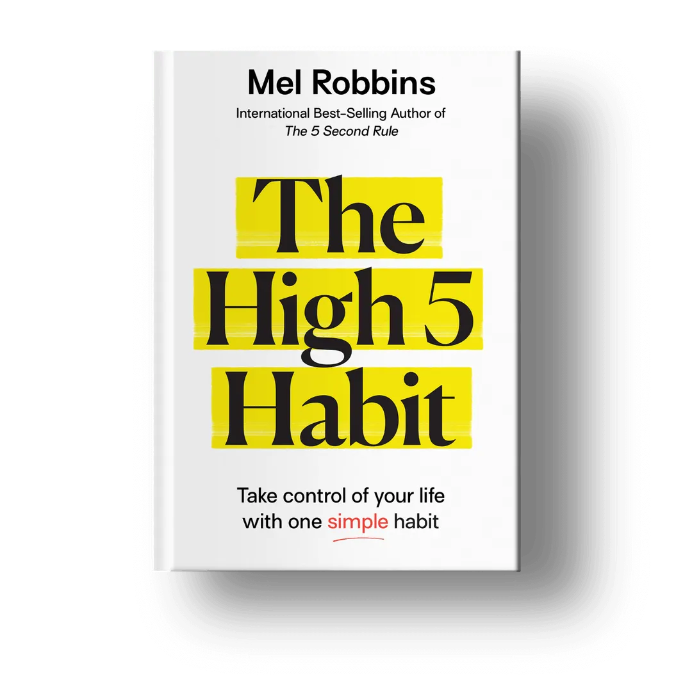

Hey,
it's your friend
Mel!
Welcome :)
Mel Robbins: A Role Model
Mel Robbins is a dynamic and influential figure in the world of personal development and motivational speaking. Renowned for her candid, relatable, and practical approach, she has inspired millions to overcome obstacles and achieve their goals. Mel’s journey from a struggling professional to a celebrated author, speaker, and media personality is a testament to her resilience and determination.
Mel’s breakthrough came with her TEDx talk, How to Stop Screwing Yourself Over, which has garnered millions of views. Her no-nonsense advice resonated with a global audience, establishing her as a trusted voice in self-improvement. She further solidified her impact with her bestselling book, The 5 Second Rule, where she introduces a simple yet powerful tool to combat procrastination and self-doubt: counting down from five to one to push oneself into action.

Mel's Journey
In addition to her writing and speaking, Mel has made significant contributions to television and digital media. She has hosted shows on CNN, participated as a legal analyst, and created engaging online courses that help individuals transform their lives. Her approachable and authentic style, combined with actionable insights, makes her a relatable and effective mentor for people of all ages and backgrounds.
The 5 Second Rule
The cornerstone of Mel’s philosophy is the 5 Second Rule, a psychological technique she discovered during a period of personal struggle. The rule is simple: when you have an instinct to act on a goal, you must physically move within five seconds or your brain will kill the idea. This rule leverages the science of metacognition, interrupting negative thought patterns and encouraging decisive action.
Empowering Lives
In The Mel Robbins Podcast, Mel explores a wide range of topics related to self-improvement, mental health, and personal growth. She also actively connects with her audience through social media, providing daily doses of motivation and practical advice. By openly sharing her own struggles and triumphs, Mel becomes a relatable figure, demonstrating that change is possible no matter where you start.
Two Mel Robbins Books You Need To Read
The 5 Second Rule
- Over 1M Copies Sold
- Over 100,000 Five Star Reviews
- #1 Selling Self-Published Audiobook of all Time
The 5 Second Rule empowers individuals to overcome procrastination and self-doubt through a countdown method, urging immediate action from five to one.
Count down and take action!The High 5 Habit
- New York Times Bestseller
- Barnes & Noble Best Books of 2021
- #1 Audiobook in the World
The High 5 Habit transforms your outlook, mindset, and actions through a daily practice of giving yourself a morning high five in the mirror, fostering positive change.
Give yourself a high five!Disclaimer
This page is not an official representation of Mel Robbins. It was
created as part of a challenge for SheCodes.
For more information about SheCodes and their mission to empower women
through coding education,
visit their website.
Media credits: Approved photos from www.melrobbins.com